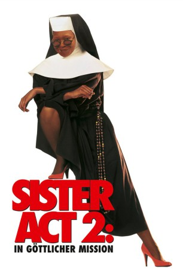
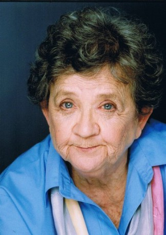
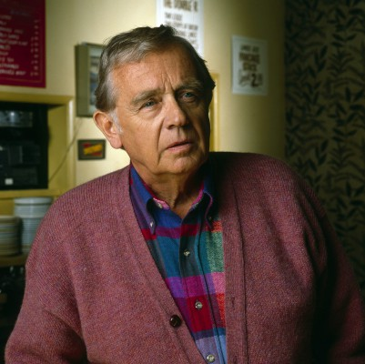

#3243 Sister Act 2 - In göttlicher Mission
Alternativ: Sister Act 2: Back in the Habit
 
 IMDB-Wertung: 5.5 / 10
IMDB-Wertung: 5.5 / 10  Metascore: 0
Metascore: 0 
Delores hat sich nach ihrem ersten Auftritt als Schwester Mary Clarence zu einem Star in Las Vegas gemausert. Als ihre alten Freundinnen - Schwester Mary Patrick, Mary Lazarus und Mary Robert sie um Hilfe bitten, zögert sie nicht lange: Die Kinder der St. Francis High School sind echte Chaoten und nehmen den Musikunterricht überhaupt nicht ernst. Das ändert sich, als Delores neue Sitten einführt und einen erstklassigen Chor mit den Schülern auf die Beine stellt, der die finanziell angeschlagene Schule retten soll. Zusammen mit ihrer neuen Lehrerin geben die Schüler alles, den Musikwettbewerb zu gewinnen...
Jahr: 1993
Dauer: 107 Minuten
FSK: 0
Land: USA Studio: Buena Vista PicturesTonspuren: DD5.1 - ,
Untertitel: Deutsch,
Auflösung: 1080p (1920x1040) Größe: 8130 MB
Genre: Musik, Komödie
Regisseur: Bill Duke
Drehbuch: Paul Rudnick, James Orr, Jim Cruickshank, Judi Ann Mason
Soundtrack: Miles Goodman
Darsteller:
 Whoopi Goldberg als Deloris
Whoopi Goldberg als Deloris Kathy Najimy als Sister Mary Patrick
Kathy Najimy als Sister Mary Patrick Barnard Hughes als Father Maurice
Barnard Hughes als Father Maurice Mary Wickes als Sister Mary Lazarus
Mary Wickes als Sister Mary Lazarus James Coburn als Mr. Crisp
James Coburn als Mr. Crisp Michael Jeter als Father Ignatius
Michael Jeter als Father Ignatius Wendy Makkena als Sister Mary Robert
Wendy Makkena als Sister Mary Robert- Sheryl Lee Ralph als Florence Watson
 Robert Pastorelli als Joey Bustamente
Robert Pastorelli als Joey Bustamente- Thomas Gottschalk als Father Wolfgang
 Maggie Smith als Mother Superior
Maggie Smith als Mother Superior- Lauryn Hill als Rita Watson
 Alanna Ubach als Maria
Alanna Ubach als Maria Jennifer Love Hewitt als Margaret
Jennifer Love Hewitt als Margaret- Devin Kamin als Frankie
- Tanya Blount als Tanya
- Valeria Andrews als Classroom Kid
- Monica Calhoun als Classroom Kid
- Riley Weston als Classroom Kid
- Patrick Malone als Classroom Kid
- Jermaine Montell als Classroom Kid
-  Pat Crawford Brown als Choir Nun
 Ellen Albertini Dow als Choir Nun
Ellen Albertini Dow als Choir Nun Beth Fowler als Choir Nun
Beth Fowler als Choir Nun- Ruth Kobart als Choir Nun
 Jenifer Lewis als Vegas Backup Singer #1
Jenifer Lewis als Vegas Backup Singer #1- Sharon Brown als Vegas Backup Singer #3
 Kevin Alexander Stea als Dancer
Kevin Alexander Stea als Dancer Sebastian La Cause als Dancer
Sebastian La Cause als Dancer- Raymond Del Barrio als Dancer
-  Warren Frost als Archdiocese Person #1
 Robin Gammell als Archdiocese Person #2
Robin Gammell als Archdiocese Person #2- Yolanda Whittaker als Sondra
 Bill Duke als Mr. Johnson
Bill Duke als Mr. Johnson Sydney Lassick als Competition Announcer
Sydney Lassick als Competition Announcer- Michael Taliferro als Security Guard
- Kai Bowe als Stage Manager
- William D. Hall als Chapman Choir Leader
 Bill Irwin als Unnamed Brother #1 , uncredited
Bill Irwin als Unnamed Brother #1 , uncredited Tanya Newbould als Stage Manager , uncredited
Tanya Newbould als Stage Manager , uncredited- David Ulmer als Reporter , uncredited
- Terri J. Vaughn als Student , uncredited
 Brad Sullivan als Father Thomas
Brad Sullivan als Father Thomas- Ryan Toby als Ahmal
- Ron Johnson als Sketch
- Christian Fitzharris als Tyler Chase
- Mehran Marcos Sedghi als Marcos
- Dionna Brooks-Jackson als Classroom Kid
- Martha Gonzalez als Classroom Kid
- Deondray Gossett als Classroom Kid
Datei: X:\2-Dilogie(N-Z)\Sister Act\Sister Act 2 - In göttlicher Mission (1993, FSK0, 1920x1040).mkv seit 21.02.2016
Festplatte: HD Collection-2(A-Z)-3(A-M)
 Alle Filme aus Gruppe '2-Dilogie(N-Z)\Sister Act'
Alle Filme aus Gruppe '2-Dilogie(N-Z)\Sister Act'